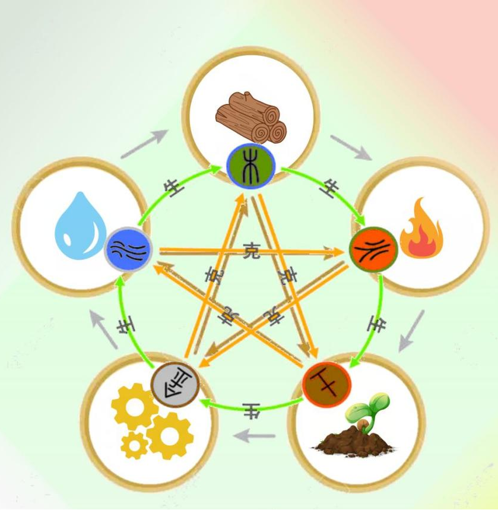

阴阳(Yin And Yang)
阴和阳是一个中国哲学概念，描述相反但相互关联的力量。
Yin and yang is a Chinese philosophical concept that describes opposite but interconnected forces.
要保持健康，一个人体内的阴阳需要平衡。
To be healthy, we need to balance the yin and yang forces within our own body.

中医五行(The five elements of TCM)